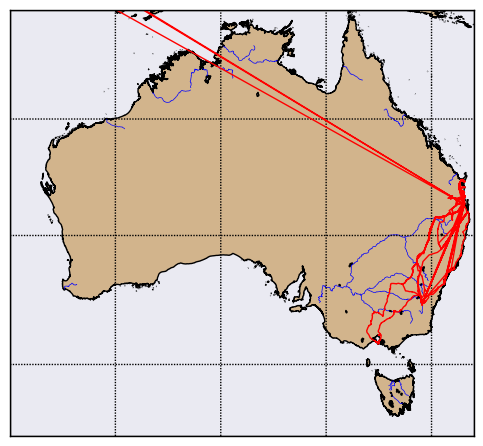
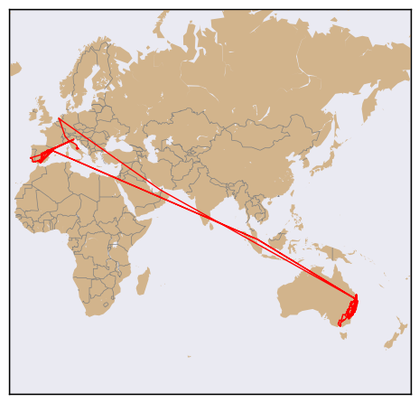
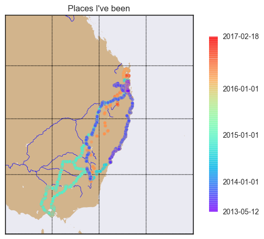
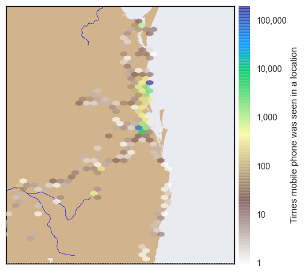

Visualizing Google Location Data
Introduction
There have been a number of blog posts by others on visualizing your travels (See http://geoffboeing.com/2014/08/visualizing-summer-travels/, and http://beneathdata.com/how-to/visualizing-my-location-history/. I thought that I would have a go myself.
If you have an Android phone (as I have), and if you don't really care about on-line privacy (as I don't), them almost certainly Google is (and has been) tracking where you are every minute or so. The good news is that you can ask Google for this data, to refresh holiday memories. I assume that Google use this data to enhance the value of my eyeballs to potential advertisers.
The webpage at http://beneathdata.com/how-to/visualizing-my-location-history/ has a pretty good explanation of how to download the Google location data, so I won't repeat it here.
I decided to use Basemap to perform the spatial visualizations; GeoPandas was considered, but I wanted some of the Basemap-related capabilities, like hex-maps.
Loading the data
Once you have the download from Google complete, you can loading it into a pandas dataframe as below.
with open('../data/LocationHistory.json', 'r') as fh:
raw = json.loads(fh.read())
#end with
ld = pd.DataFrame(raw['locations'])
The with statement automatically closes the data file when you are done reading.
Understanding the data
The first thing I do when dealing with a strange dataframe is to head(), and tail() it:
print(ld.head(3))
accuracy activitys altitude \
0 64 [{'timestampMs': '1487406329516', 'activities'... NaN
1 60 [{'timestampMs': '1487406148411', 'activities'... NaN
2 60 [{'timestampMs': '1487406029352', 'activities'... NaN
heading latitudeE7 longitudeE7 timestampMs velocity verticalAccuracy
0 NaN -265269385 1530865302 1487406266398 NaN NaN
1 NaN -265269385 1530865302 1487406145368 NaN NaN
2 NaN -265269385 1530865302 1487406024219 NaN NaN
print(ld.tail(3))
accuracy activitys altitude heading latitudeE7 longitudeE7 \
330905 100 NaN 414.0 -1.0 420494565 139296849
330906 100 NaN 414.0 -1.0 420494691 139297149
330907 100 NaN 414.0 -1.0 420494691 139297149
timestampMs velocity verticalAccuracy
330905 1368308078219 -1.0 NaN
330906 1368308078180 -1.0 NaN
330907 1368308078159 -1.0 NaN
So, we have just over 300,000 data points, and it looks like the key data values are:
-
timespampMs
-
latitudeE7
-
longitudeE7
All the rest can take NaN values at some stage, or so it appears.
I was intrigued by the 'activitys' column (not the least by the strange spelling).
A bit of probing: filter out all rows with 'activitys' null; get the 'activitys' column;
print the first element. It looks like the entries are a list of dictionaries (where each dictionary
has a 'activities' key, whose value is a list holding a dictionary, where 'type' appears to be
Google's guess as what we are doing).
a = ld[~ld['activitys'].isnull()]
aa = a['activitys']
aa[0]
[{'activities': [{'confidence': 100, 'type': 'still'}],
'timestampMs': '1487406329516'},
{'activities': [{'confidence': 100, 'type': 'still'}],
'timestampMs': '1487406269470'},
{'activities': [{'confidence': 100, 'type': 'still'}],
'timestampMs': '1487406208640'}]
So, lets get the first of the activities types for each measurement into a list, and then collapse the list into a set.
b = [ x[0]['activities'][0]['type'] for x in aa]
set(b)
Out[43]:
{'exitingVehicle',
'inVehicle',
'onBicycle',
'onFoot',
'still',
'tilting',
'unknown'}
"Tilting", what on earth is "tilting"? Another unsolved mystery.
Refining the data
Now we get the data into a more managable form. First we create new columns that contain latitude and longitude in degrees:
ld['latitude'] = ld['latitudeE7']/float(1e7)
ld['longitude'] = ld['longitudeE7']/float(1e7)
and columns to hold the timestamp in seconds (since some Pythonic epoch), and then the date-time of each measurement.
ld['timestamp'] = ld['timestampMs'].map(lambda x: float(x)/1000)
ld['datetime'] = ld.timestamp.map(datetime.datetime.fromtimestamp)
We the look at these new columns. First the head.
print(ld[['latitude', 'longitude', 'datetime']].head())
latitude longitude datetime
0 -26.526938 153.086530 2017-02-18 18:24:26.398
1 -26.526938 153.086530 2017-02-18 18:22:25.368
2 -26.526938 153.086530 2017-02-18 18:20:24.219
3 -26.526938 153.086530 2017-02-18 18:20:09.188
4 -26.526971 153.086652 2017-02-18 18:18:08.182
Then the tail.
print(ld[['latitude', 'longitude', 'datetime']].tail())
latitude longitude datetime
330903 42.049202 13.929222 2013-05-12 07:36:42.094
330904 42.049467 13.929704 2013-05-12 07:36:42.073
330905 42.049456 13.929685 2013-05-12 07:34:38.219
330906 42.049469 13.929715 2013-05-12 07:34:38.180
330907 42.049469 13.929715 2013-05-12 07:34:38.159
So the data ranges from more than three years ago, to about when I did the download. Seems OK.
Map the data
my_map = Basemap(projection='merc', lat_0=57, lon_0=-135,
resolution = 'h', area_thresh = 0.1,
llcrnrlon=110.0, llcrnrlat=-45,
urcrnrlon=154.0, urcrnrlat=-10)
my_map.drawcoastlines()
my_map.drawcountries()
my_map.drawrivers(color='blue')
my_map.fillcontinents(color='tan')
my_map.drawmapboundary()
my_map.drawmeridians(np.arange(0, 360, 10))
my_map.drawparallels(np.arange(-90, 90, 10))
lats = ld['latitude'].as_matrix()
lons = ld['longitude'].as_matrix()
x,y = my_map(lons ,lats)
my_map.plot(x,y,marker='', color='red', linewidth=1)
plt.show()
The first part of the above is setting up the map, with a Mercator projection, coastlines, rivers,
land filled in in 'tan', water in blue, and the meridians and parallels drawn at 10 degree intervals.
The Basemap call sets the lat/lon limits to be South-East Australia.
Then we get the lat/lons from the pandas dataframe, convert them to Mercator coordinates, and plot them in red (suppressing any markers), to get:

We can see trips to Sydney, Canberra, and Melbourne (sometimes driving, sometimes flying).
If we zoom back out, by setting the lat/lon limits in the basemap call to different values. We turn off rivers at the global level.
my_map = Basemap(projection='merc', lat_0=57, lon_0=-135,
resolution = 'c', area_thresh = 0.1,
llcrnrlon=-20, llcrnrlat=-60,
urcrnrlon=180, urcrnrlat=75)
my_map.drawcountries(color='grey')
my_map.fillcontinents(color='tan')
my_map.drawmapboundary()
lats = ld['latitude'].as_matrix()
lons = ld['longitude'].as_matrix()
x,y = my_map(lons ,lats)
my_map.plot(x,y,marker='', color='red', linewidth=1)
plt.show()
This gives us:

Loved Amsterdam!
Showing Time
Next, we will use a scatter plot, with the timestamp acting to color-code each point, to attempt to show the passage of time.
First, we set up our map as before, to show south-eat Australia:
fig, ax = plt.subplots()
my_map = Basemap(projection='merc', lat_0=57, lon_0=-135,
resolution = 'h', area_thresh = 0.1,
llcrnrlon=140.0, llcrnrlat=-40,
urcrnrlon=160.0, urcrnrlat=-20)
my_map.drawrivers(color='blue')
my_map.fillcontinents(color='tan')
my_map.drawmapboundary()
my_map.drawmeridians(np.arange(0, 360, 5))
my_map.drawparallels(np.arange(-90, 90, 5))
Then we get our lat/lon values from our dataframe.
lats = ld['latitude'].as_matrix()
lons = ld['longitude'].as_matrix()
Then we get our dates, and get the strings that represent the start and end of the location data.
We will use this later to label the colorbar for the map. We then pick some key dates in the
measurement period: I have chosen the start of each calendar year. We have to convert these
to timestamp units, to give us year_ticks.
times = ld['timestamp'].as_matrix()
mint = min(times)
maxt = max(times)
t0 = min(ld['datetime'])
t1 = max(ld['datetime'])
print(str(t0)[0:10])
print(str(t1)[0:10])
dates = ['2014-01-01', '2015-01-01', '2016-01-01']
year_ticks = [time.mktime(datetime.datetime.strptime(s, "%Y-%m-%d").timetuple()) for s in dates]
The two print statements give us:
2013-05-12
2017-02-18
which is what we expected.
We the convert the lat/lons to Mercator units, and plot them.
x,y = my_map(lons ,lats)
a = my_map.scatter(x,y,marker='o', s=20, c=times, cmap='rainbow', zorder=4, edgecolor='tan', alpha=0.6)
Here, marker='o' draws circles, s=20 draw large-ish dots, c=times says, 'color each dot according to the corresponding times value',
cmap='rainbow' sets the color map (nothing restrained about my color choices!), zorder=4 sets the order in which the dots are drawn,
relative to the background, etc (I am a touch paranoid about zorder, having spent debugging hours to find out
my beautiful plots were in fact being drawn, but just hidden behind a map layer or two). I set the dot edgecolor to be the same as the land background, and alpha
to reduce the rainbow glare a little.
We then create and set the map colorbar; we mark with ticks the start and end dates, and the calendar year starts, and set the appropriate labels for each tick mark. Note the tickmark values don't have to be in ascending order.
cbax = fig.colorbar(a, shrink=0.8, ticks=[mint, maxt]+year_ticks)
cbax.set_ticklabels([str(t0)[0:10],str(t1)[0:10]]+dates)
Set a title, and show it!
ax.set_title("Places I've been")
plt.show()
Now, we can mostly see the road trips; I suspect that if I added some jitter to the position of each dot, we might see a lot more, but you have to stop somewhere.

Showing density
A slight variant on the previous map shows where I mostly spend my time.
We use the Basemap hex-bin feature. The first part of the program just creates the Basemap as before zoomed into South East Queensland, and then we have:
lats = ld['latitude'].as_matrix()
lons = ld['longtitude'].as_matrix()
x,y = my_map(lons ,lats)
my_map.hexbin(x, y, zorder=3, alpha=0.7, gridsize=1000, mincnt=1,
cmap='terrain_r', linewidths=0, edgecolors='k', norm=colors.LogNorm(),
)
cb = my_map.colorbar(label='Times mobile phone was seen in a location')
cb.set_ticks([1, 10, 100, 1000, 10000, 100000, 1000000])
cb.set_ticklabels(['1', '10', '100', '1000', '10000', '100000', '1000000'])
Here we tell Basemap we want a hexagonal grid, and to count the converted lat/lon values that fall in each grid hex.
We insist on a minimum count of 1 (else, the zero counts would fill the map), set linewidth to 0 so the grid is not drawn.
Finally, we specify that we want to take the logarithm of the counts before visualization.
Then we set the colorbar tick marks and labels to be powers of ten (a little bit of a cheat, because I know in advance what my range is).
plt.show()
to get:

You can see by the blue cells where I lived in Brisbane, and where I live now. I struggled to get a good color map for this map, and eventually settled on a reverse terrain map.
The Imports
The imports from the Notebook holding this code is below (not all are used by the fragments shown).
# all imports should go here
import pandas as pd
import sys
import os
import subprocess
import datetime
import platform
import datetime
import time
import json
import matplotlib.pyplot as plt
import seaborn as sns
from mpl_toolkits.basemap import Basemap
import matplotlib.colors as colors
import numpy as np